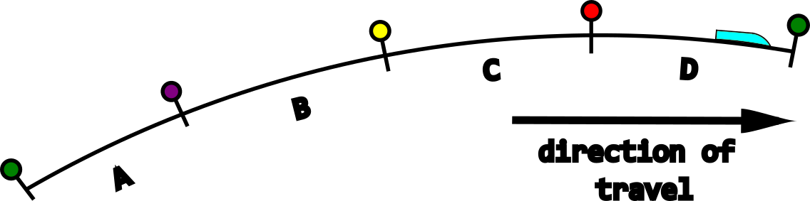
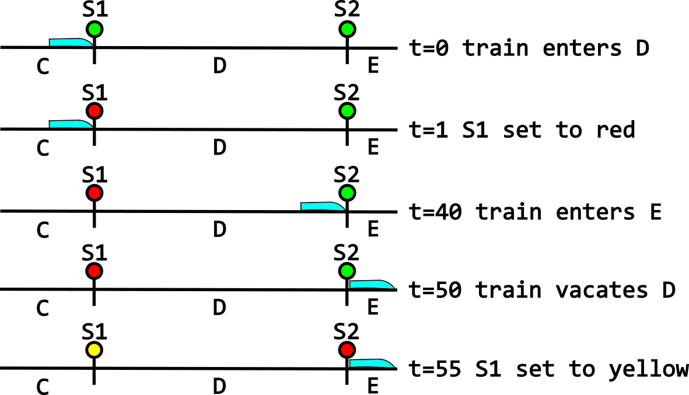
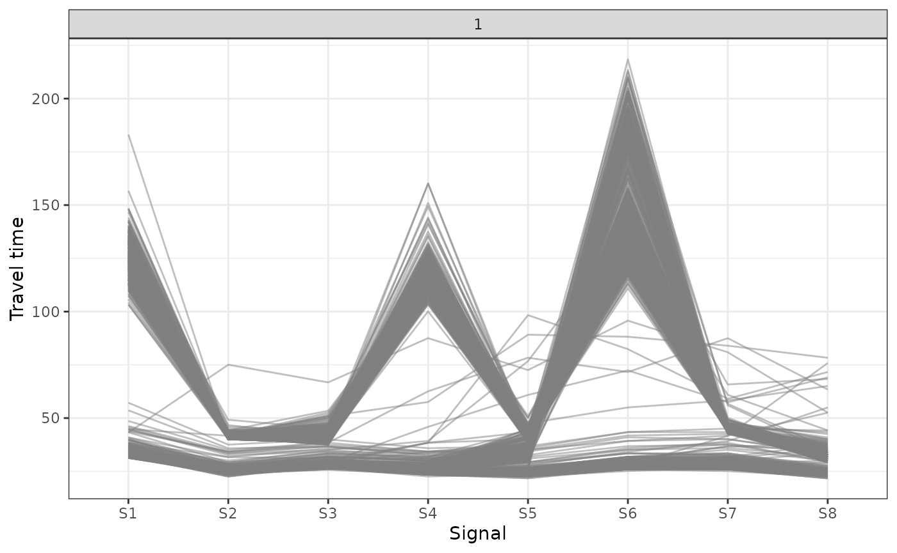
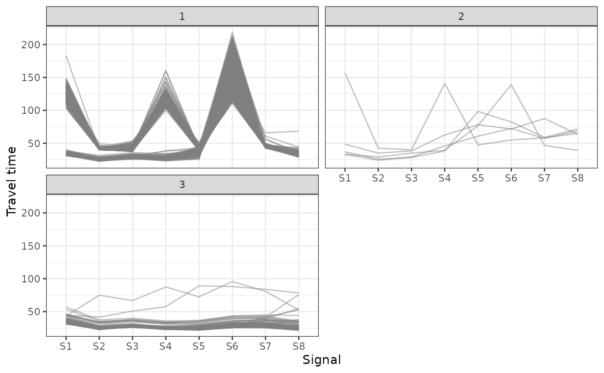

Introduction
This vignette will guide you through the railvarr
processing pipeline from start to finish. It is assumed that you are
already in possession of Centrix and timetable data.
railvarr provides no functionality for reading raw data.
Instead, you should massage your data to match the description of
raw_centrix in wrangle_centrix() and of
timetable in wrangle_timetable().
Centrix
Overview
Railway tracks are separated into distinct blocks, called berths. These berths are protected by signals. In this example, there is a train in berth D and the signals are using a 4-aspect system.

Each berth is made up of one or more track sections, which are fitted with track circuits. These track circuits detect the presence or absence of trains, triggering changes in the signalling system.
Centrix data comes from the state transitions caused by train movements, detected by track circuits.

Note that there is a small offset between the train entering a berth and the signal changing to red. There is also an offset between the train vacating the berth and the signal changing to yellow.
The Centrix observations derived from these events would be as follows:
#> # A tibble: 7 × 3
#> asset dt transition
#> <chr> <dbl> <chr>
#> 1 D TR 0 UP to DN
#> 2 S1 DGE 1 UP to DN
#> 3 S1 RGE 1 DN to UP
#> 4 E TR 40 UP to DN
#> 5 D TR 50 DN to UP
#> 6 S1 RGE 55 UP to DN
#> 7 S1 HGE 55 DN to UPThe track (denoted by a " TR" suffix on the asset ID)
transitions come from the track circuits. Therefore,
"UP to DN" denotes a train entering the track, while
"DN to UP" denotes a train vacating the track.
Signal transitions are different, with "UP to DN"
representing a change FROM a state, while "DN to UP"
represents a change TO a state. Therefore, the second observation says
that signal S1 changed off of green (DGE) at
time 1. The third observation correspondingly says that
signal S1 changed to red (RGE) at time
1. The signal state (which corresponds to its aspect) is
embedded as a suffix to the asset ID.
Processing
railvarr provides a number of functions to facilitate
the processing of Centrix data. These functions are wrapped by the
function wrangle_centrix(). See the specific function
documentation for more details.
wrangle_centrix() requires raw Centrix data as described
in the previous section, as well as a map of the track sections of
interest. This map specifies which signals, tracks, and berths make up
the section. Since berths can contain more than one track but only one
signal, the map provides a 1-1 mapping from signal to berth, and a
1-many mapping from berth to track.
The map also contains a column named event, which
represents the fact that a train can both enter and vacate a track. This
allows for finer control over the start and end of the track section.
For example, if we wanted to have access to the time at which the train
entered berth E, we would have to include an 'enters' event
for berth E in the map.
The map for the previous example of berths C to E would be as follows:
#> # A tibble: 3 × 4
#> signal berth track event
#> <chr> <chr> <chr> <chr>
#> 1 S1 D TD enters
#> 2 S1 D TD vacates
#> 3 S2 E TE entersNote that we don’t need to include berth C in the map unless we wanted access to the time at which the train vacated that berth. To process the 7 observations derived from the example, this map is sufficient.
This representation of the network map is limited, as it can only handle linear sections of track, travelling in a single direction. More complex track layouts such as junctions are not supported.
With a raw_centrix data frame along with the
asset_map, you can process the data using:
data(raw_centrix, asset_map)
raw_centrix
#> # A tibble: 110,339 × 3
#> asset dt transition
#> <chr> <dttm> <chr>
#> 1 TA-1 TR 2000-01-01 06:13:48 UP to DN
#> 2 S1 HHGE 2000-01-01 06:13:49 UP to DN
#> 3 S1 HGE 2000-01-01 06:13:49 UP to DN
#> 4 S1 RGE 2000-01-01 06:13:49 DN to UP
#> 5 TA-1 TR 2000-01-01 06:25:29 DN to UP
#> 6 TA-1 TR 2000-01-01 06:25:31 UP to DN
#> 7 TA-1 TR 2000-01-01 06:25:43 DN to UP
#> 8 S1 HHGE 2000-01-01 06:25:48 DN to UP
#> 9 S1 HGE 2000-01-01 06:25:48 DN to UP
#> 10 S1 RGE 2000-01-01 06:25:48 UP to DN
#> # ℹ 110,329 more rows
asset_map
#> # A tibble: 17 × 4
#> signal berth track event
#> <chr> <chr> <chr> <chr>
#> 1 S1 A TA-1 enters
#> 2 S1 A TA-2 vacates
#> 3 S2 B TB-1 enters
#> 4 S2 B TB-2 vacates
#> 5 S3 C TC-1 enters
#> 6 S3 C TC-2 vacates
#> 7 S4 D TD enters
#> 8 S4 D TD vacates
#> 9 S5 E TE enters
#> 10 S5 E TE vacates
#> 11 S6 F TF-1 enters
#> 12 S6 F TF-2 vacates
#> 13 S7 G TG-1 enters
#> 14 S7 G TG-2 vacates
#> 15 S8 H TH enters
#> 16 S8 H TH vacates
#> 17 S9 I TI enters
railvarr::wrangle_centrix(raw_centrix, asset_map)
#> # A tibble: 6,952 × 15
#> signal berth train_id aspect t_enters t_red_on
#> <chr> <chr> <int> <fct> <dttm> <dttm>
#> 1 S1 A 1 G 2000-01-01 13:07:11 2000-01-01 13:07:12
#> 2 S2 B 1 G 2000-01-01 13:09:18 2000-01-01 13:09:19
#> 3 S3 C 1 G 2000-01-01 13:09:58 2000-01-01 13:09:59
#> 4 S4 D 1 G 2000-01-01 13:10:41 2000-01-01 13:10:42
#> 5 S5 E 1 G 2000-01-01 13:12:39 2000-01-01 13:12:39
#> 6 S6 F 1 G 2000-01-01 13:13:18 2000-01-01 13:13:19
#> 7 S7 G 1 G 2000-01-01 13:15:35 2000-01-01 13:15:35
#> 8 S8 H 1 G 2000-01-01 13:16:19 2000-01-01 13:16:20
#> 9 S1 A 2 G 2000-01-01 13:11:58 2000-01-01 13:11:59
#> 10 S2 B 2 YY 2000-01-01 13:12:43 2000-01-01 13:12:43
#> # ℹ 6,942 more rows
#> # ℹ 9 more variables: t_enters_next <dttm>, t_vacates <dttm>, t_red_off <dttm>,
#> # TSAR <dbl>, T_onset <dbl>, T_clear <dbl>, T_offset <dbl>, T_travel <dbl>,
#> # T_coach <dbl>You can access these example data sets by running
data(raw_centrix, asset_map). As you can see, the resulting
data frame contains the timings that we saw earlier:
-
t_enters: time the train enters the berth -
t_red_on: time the signal changes to red -
t_enters_next: time the train enters the next berth -
t_vacates: time the train vacates the berth -
t_red_off: time the signal changes from red
The aspect column gives the signal aspect that the train
saw as it entered the berth. In our previous example, the train saw a
green (G) aspect as it entered berth D.
The processed data frame contains calculated durations as well as
timings. These durations are derived from TSAR, which is
equal to t_red_off - t_red_on. TSAR stands for
‘Time Signal At Red’ and represents the amount of time (in seconds) that
the signal spent on a red aspect. The other durations calculated
are:
-
T_onset:t_red_on - t_enterstime between train entering berth and signal changing to red -
T_clear:t_vacates - t_enterstime taken for train to completely clear the berth -
T_offset:t_red_off - t_vacatestime between train vacating berth and signal changing from red -
T_travel:t_enters_next - t_enterstime taken for train to travel the length of the berth -
T_coach:t_vacates - t_enters_nexttime taken for train to travel its own length
wrangle_centrix() also performs data validation,
potentially resulting in the loss of around 5% of data points. However,
this is necessary to ensure that the resulting journeys contain valid
data. As part of this, the function identifies individual train
journeys, labeling each train with a unique ID number.
Clustering
Centrix data contains no information about stopping patterns. However, they can be deduced from travel times. As you can see from the following plot, there are obvious differences in travel times in the berths which contain stations.

These differences can be categorised using K-means clustering. This
is automated by the function cluster_journeys(). This data
set contains 3 distinct groups of trains, which can be specified using
the centers parameter.
berth_events_clusters <- cluster_journeys(berth_events,
centers = 3L,
iter.max = 40L)
plot_clusters(berth_events_clusters)
Because K-means clustering is a stochastic algorithm, the results of
cluster_journeys() are occasionally not what would be
expected. In that case, simply run the clustering again. Some trains may
also be miscategorised. This can be diagnosed visually using
plot_clusters(), but it is unfortunately a manual process
to remedy the issue.
Timetable
Processing
Again, railvarr provides no functionality for reading
raw data. Therefore, the first step is to make sure your data lines up
with what railvarr expects. A timetable is a list of
events. Each event belongs to a train, denoted by its headcode
(train_header) and the time and date at which it originated
(dt_origin). An event also takes place at a geographical
location, commonly known as a TIPLOC. In
railvarr timetables, TIPLOCs live in the geo
column. We then also have the type of event, which is contained in the
event column. An event can have one of the following
types:
-
Passtrain passes without stopping -
Arrivetrain arrives at a station -
Departtrain departs a station -
Originatewhere the train originates from -
Terminatewhere the train will terminate
Each event has a scheduled time (wtt) and an actual time
(t), as well as a delay (delay) which is
simply the difference between the actual and scheduled times. There is a
further column named allow, which is used for any
timetabled delay allowance. This is commonly used for ECS trains
(headcode starts with ‘5’) as they often incur delays waiting for
passenger services. The allowance means that delays can be expected and
aren’t necessarily problematic. For further information on the expected
structure of a raw timetable, see wrangle_timetable().
Once your timetable is in the correct structure, you can go ahead and
use the wrangle_timetable() function. This function wraps
three processing functions:
There are two extra parameters required for
wrangle_timetable(): stations and
stopping_stations.
stations should be a list of TIPLOCs (geo)
through which trains pass. This list is used to work out which trains
travel through the track section of interest. For example, there could
be a fork in the track, where trains can travel to the left or to the
right. If you want to only look at trains which turn to the left,
stations would include all the TIPLOCs of interest which
are situated along the left track. Any trains which do not pass through
any of the TIPLOCs specified in stations will be
discarded.
stopping_stations should be a subset of
stations, which specifies which TIPLOCs trains can stop at.
This is used for calculating calling patterns. Therefore, any train
which does not stop at any of the stations specified in
stopping_stations will be labeled as a ‘fast’ train. Trains
which do stop at these stations will be labeled with ‘stopping-’, with
the specific stations at which they stop attached as suffixes. For
example, if a train stops at ‘geo10’, its calling pattern will be
labeled as ‘stopping-geo10’.
# Load example data from railvarr
data(timetable, stations, stopping_stations)
# Raw timetable: note the number of observations and that none of the TIPLOCs
# (`geo`) appear in the list of stations
timetable
#> # A tibble: 8,958 × 11
#> train_header dt_origin geo event wtt
#> <chr> <dttm> <chr> <chr> <dttm>
#> 1 168H 2000-01-01 12:05:00 geo1 Originate 2000-01-01 12:20:00
#> 2 168H 2000-01-01 12:05:00 geo18 Arrive 2000-01-01 12:23:00
#> 3 168H 2000-01-01 12:05:00 geo18 Depart 2000-01-01 12:24:00
#> 4 168H 2000-01-01 12:05:00 geo2 Arrive 2000-01-01 12:28:00
#> 5 168H 2000-01-01 12:05:00 geo2 Depart 2000-01-01 12:29:00
#> 6 168H 2000-01-01 12:05:00 geo3 Arrive 2000-01-01 12:35:30
#> 7 168H 2000-01-01 12:05:00 geo3 Depart 2000-01-01 12:36:30
#> 8 168H 2000-01-01 12:05:00 geo104 Arrive 2000-01-01 12:39:00
#> 9 168H 2000-01-01 12:05:00 geo104 Depart 2000-01-01 12:39:30
#> 10 168H 2000-01-01 12:05:00 geo4 Arrive 2000-01-01 12:41:30
#> # ℹ 8,948 more rows
#> # ℹ 6 more variables: t <dttm>, delay <dbl>, allow <dbl>, allow_perf <dbl>,
#> # allow_path <dbl>, allow_eng <dbl>
# List of TIPLOCs defining the track section of interest
stations
#> [[1]]
#> [1] "geo5"
#>
#> [[2]]
#> [1] "geo6"
#>
#> [[3]]
#> [1] "geo110"
#>
#> [[4]]
#> [1] "geo111"
#>
#> [[5]]
#> [1] "geo112"
#>
#> [[6]]
#> [1] "geo7" "geo8"
# List of stations in the track section at which trains stop
stopping_stations
#> [[1]]
#> [1] "geo110"
#>
#> [[2]]
#> [1] "geo111"
#>
#> [[3]]
#> [1] "geo112"
# Processed timetable: not how few observations persist, fewer than 10%; note
# also that all the TIPLOCs apear in stations
railvarr::wrangle_timetable(timetable, stations, stopping_stations)
#> # A tibble: 792 × 12
#> train_header dt_origin geo event wtt
#> <chr> <dttm> <chr> <chr> <dttm>
#> 1 108H 2000-01-01 12:55:00 geo5 Arrive 2000-01-01 13:34:00
#> 2 108H 2000-01-01 12:55:00 geo5 Depart 2000-01-01 13:35:30
#> 3 108H 2000-01-01 12:55:00 geo6 Pass 2000-01-01 13:37:30
#> 4 108H 2000-01-01 12:55:00 geo110 Arrive 2000-01-01 13:39:00
#> 5 108H 2000-01-01 12:55:00 geo110 Depart 2000-01-01 13:39:30
#> 6 108H 2000-01-01 12:55:00 geo111 Arrive 2000-01-01 13:42:00
#> 7 108H 2000-01-01 12:55:00 geo111 Depart 2000-01-01 13:42:30
#> 8 108H 2000-01-01 12:55:00 geo112 Arrive 2000-01-01 13:44:30
#> 9 108H 2000-01-01 12:55:00 geo112 Depart 2000-01-01 13:45:00
#> 10 108H 2000-01-01 12:55:00 geo7 Arrive 2000-01-01 13:48:00
#> # ℹ 782 more rows
#> # ℹ 7 more variables: t <dttm>, delay <dbl>, allow <dbl>, allow_perf <dbl>,
#> # allow_path <dbl>, allow_eng <dbl>, group <chr>Specifications
We can use the scheduled times in the timetable to calculate how long
it should take to travel along the track. This can be calculated using
calculate_journey_specifications(). It can be useful to
know expected journey times, for example to inform the ID matching
process. The function requires a timetable and a list of stations for
which to calculate journey specifications. Using the example dataset, we
can use the following list of stations:
#> [[1]]
#> [1] "geo6"
#>
#> [[2]]
#> [1] "geo110"
#>
#> [[3]]
#> [1] "geo111"
#>
#> [[4]]
#> [1] "geo112"
#>
#> [[5]]
#> [1] "geo7"This list encompasses the track section contained in the Centrix data. However, you can alter this however you like.
ID Matching
Overview
Although it is possible to analyse Centrix and timetable data in its current, processed form, further analysis can be performed by combining these two datasets. To do this, Centrix train journeys must be matched to timetabled journeys. This is a fuzzy process, because times in timetables are rounded to the nearest 15/30 seconds. In the example dataset, times are rounded to the nearest 30 seconds. Furthermore, some Centrix journeys may not be present in the timetable and vice-versa. As a result of these issues, the ID matching process can result in a lot of data loss. It is recommended that you manually check your results for outliers and mismatches.
ID matching uses the fact that berths in the Centrix data line up
with TIPLOCs in the timetable. In the example dataset, berth A
corresponds to TIPLOC geo110 which represents a station. Which berths
and TIPLOCs to make use of depends on the train’s stopping pattern. A
train which stops at geo110 and nowhere else can only be matched at that
station. This is because these trains will likely not include any other
information in the timetable. The only TIPLOCs (and therefore berths)
which are included in the timetable are usually only junctions (a
Pass event) and stations at which the train stops (one
Arrive and one Depart event). There can be
more Pass events, but this is not guaranteed.
match_mapping
You can specify where to perform the ID matching using the
match_mapping parameter. This is a data frame with 5
columns:
-
group: the train group, e.g. ‘fast’ or ‘stopping-all’ -
berth: the berth at which to match, e.g. berth ‘A’ -
geo: the TIPLOC at which to match, e.g. ‘geo110’ lbub
The columns lb and ub dictate the matching
tolerance. In order to understand how they work, you have to understand
what the algorithm is doing on the inside and what constitutes a match.
In the Centrix data, we have two important timings for matching:
t_enters and t_vacates. t_enters
is when the train entered the berth and t_vacates is when
the train vacated the berth. In the timetable, we have two slightly
diferent timtings: t_Arrive and t_Depart.
t_Arrive is the time at which the train arrived at the
station and t_Depart is the time at which the train
departed the station. We can say that a Centrix observation and a
timetable observation match if the train entered the berth before
arriving at the station and if the train vacated the berth after
departing the station:
t_enters < t_Arrive & t_Depart < t_vacates
Conceptually, t_enters and t_vacates define
a window of time in which t_Arrive and
t_Depart must exist in order for a match to be made. Due to
the inherent fuzziness of timetable observations, you may wish to extend
or shrink this time window. This is done using the two previously
mentioned columns: lb and ub. These are used
to alter the previous expression as follows:
t_enters + lb < t_Arrive & t_Depart < t_vacates + ub
Therefore, if I want to match trains in the group ‘stopping-geo110’,
I can use the following match_mapping:
#> # A tibble: 1 × 5
#> group berth geo lb ub
#> <chr> <chr> <chr> <dbl> <dbl>
#> 1 stopping-geo110 A geo110 0 0If I want to generate more matches, I can extend the time window by
30 seconds in both directions using the following edited
match_mapping:
#> # A tibble: 1 × 5
#> group berth geo lb ub
#> <chr> <chr> <chr> <dbl> <dbl>
#> 1 stopping-geo110 A geo110 -30 30In general, it is recommended to start with restrictive time windows,
extending them if you want more data after matching. However, because ID
matching can result in significant data loss, you can expect to increase
the matching tolerance by extending the matching time window using
lb and ub.
Fast trains
So far, we have only considered stopping trains, which can be matched
at stations using t_Arrive and t_Depart.
However, fast trains do not stop by definition. Yet, they still pass
through various TIPLOCs (usually junctions) with a t_Pass
timing. In the example dataset, trains pass through a junction just
before entering the track section. Therefore, all fast trains have a
t_Pass timing that occurs prior to their entry into the
Centrix track section. In order to make use of this, it is necessary to
know how long it should take a train to travel from the junction to the
first Centrix berth. This can be found by using the
calculate_journey_specifications() function.
The matching expression for fast trains is slightly different:
t_enters + lb < t_Pass & t_Pass < t_enters + ub
Essentially, a match can be made if the timetable observation occurs
in-between t_enters + lb and t_enters + ub.
Therefore, you can use lb and ub to specify
the exact time window in which a match can occur. In our example
dataset, it should take no more than 4 minutes (240 seconds) to travel
from the junction to berth A. Therefore, we can set
lb = -240 to say that t_Pass should occur no
more than 240 seconds before t_enters. We can use
ub to specify the end of the window. For example, if we
want relatively high tolerance, we can set ub = 60. This
says that t_Pass can occur up to 60 seconds after
t_enters. The match_mapping for this would
be:
#> # A tibble: 1 × 5
#> group berth geo lb ub
#> <chr> <chr> <chr> <dbl> <dbl>
#> 1 fast A geo6 -240 60Note that ‘geo6’ refers to the junction prior to the Centrix berths.
You can play around with lb and ub until the
results look right to you.
Your match_mapping should include details for all of
your train groups. For example, combining fast and
stoping-geo110 trains would result in the following
match_mapping:
#> # A tibble: 2 × 5
#> group berth geo lb ub
#> <chr> <chr> <chr> <dbl> <dbl>
#> 1 stopping-geo110 A geo110 -30 30
#> 2 fast A geo6 -240 60Clustering
Because ID matching makes use of train groups, Centrix clustering is
a pre-requisite. See cluster_journeys(). You should make
sure that you label your clusters to match the calling patterns in the
timetable.
Dwell Times
It can be useful to separate travel times into moving time and dwell time. Dwell time analysis is important because stopping at stations represents one of the largest sources of variability in train travel times (citation needed?).
Berth Lengths
In order to calculate dwell times from TSAR, we need to know trains’
velocities when entering and exiting the berths. To calculate these
velocities, we need to know the berth lengths. It appears that berth
length data can be unreliable, so railvarr provides a
function to estimate lengths based on the expected journey time and a
known reference length.
A reference length can be obtained by, for example, measuring the
track length on Google maps. The expected journey time can be obtained
from the timetable specification. It is recommended to look at normal
fast trains. The function estimate_berth_lengths() finds
trains with a scheduled journey time equal to the expected journey time.
It then calculates the median Centrix travel time for those trains at
each berth. Then, for each berth, it calculates the estimated berth
length using the median travel time and expected speed. The expected
speed is calculated using the expected journey time and the reference
length.
In our example dataset, the track length is 5.97 miles and the expected journey time is 270 seconds.
data(timetable_specification, id_matching, berth_events_groups)
railvarr::estimate_berth_lengths(timetable_specification,
id_matching,
berth_events_groups,
expected_journey_time = 270,
track_length = 5.97)
#> # A tibble: 8 × 6
#> berth median_travel v.mph L.miles L.km L
#> <chr> <dbl> <dbl> <dbl> <dbl> <dbl>
#> 1 A 32.9 79.6 0.727 1.17 1170.
#> 2 B 25.1 79.6 0.555 0.893 893.
#> 3 C 27.6 79.6 0.610 0.982 982.
#> 4 D 24.7 79.6 0.546 0.879 879.
#> 5 E 24.7 79.6 0.546 0.879 879.
#> 6 F 28.9 79.6 0.639 1.03 1028.
#> 7 G 28.9 79.6 0.638 1.03 1027.
#> 8 H 24.2 79.6 0.536 0.863 863.